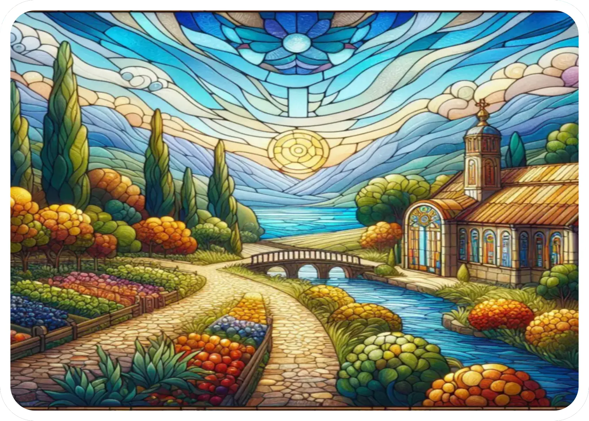

Adventure
Adventure "A" Cards

SUNSET: After concluding the eleventh space, the next player will make a decision.
PROCEED to...
- DAWN: conclude the current cycle and move to the next cycle.
- Resolve any effects.
- The player whom decided to proceed to DAWN takes their turn immediately after DAWN is concluded.
- NIGHT: begin the NIGHT phase.
- Night effects on map cards must be activated.
- Night effects for players activate immediately or on the beginning of their turn.
- The player whom decided to enter the NIGHT takes their turn immediately.
Notes: The narrator may enhance the difficulty of A/B/C cards at night arbitrarily.